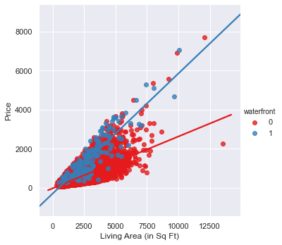
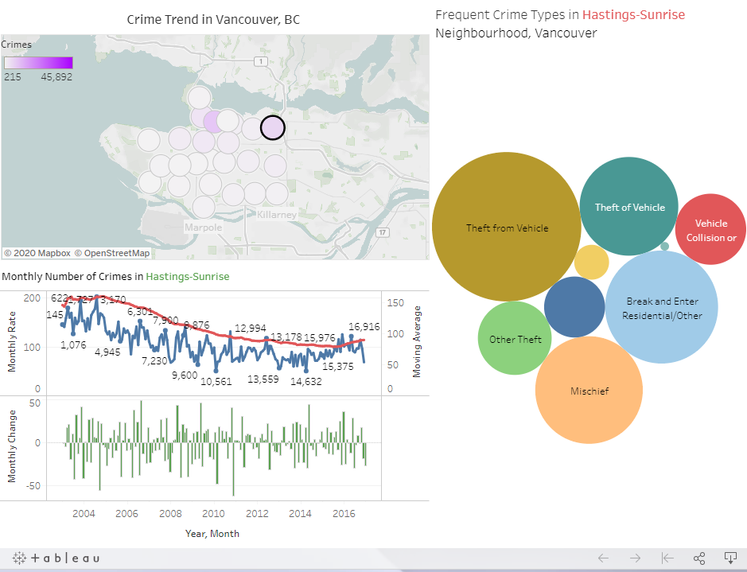
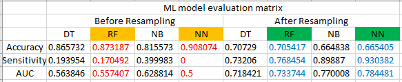
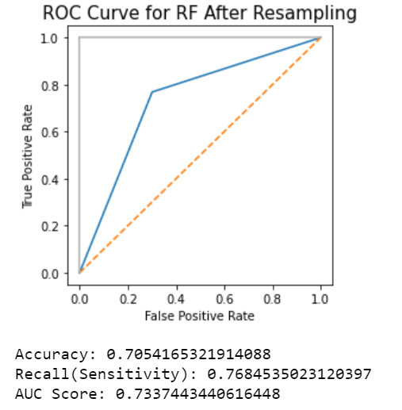
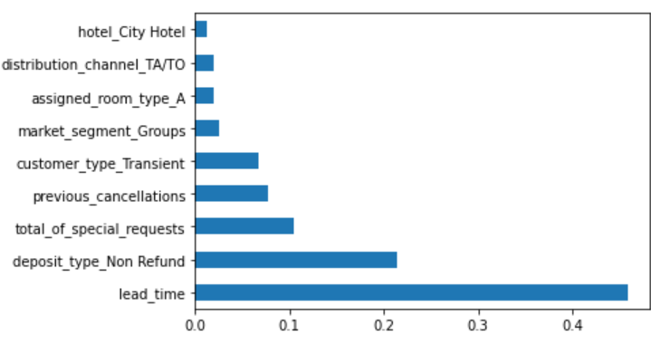

EDA House sales of King County, USA
Waterfront, number of bathrooms, number of bedrooms, and grade of house are the major factors effect on house value while other factors have limited impact on housing price. Additionally, houses in the popular region with high sales record have slightly better grade. when housing supply to King County, such factors must be primarily considered to meet the housing market demand of the city.
Data Visualization Crime rate in Vancouver & consumer behavior on toy sales
The two examples of data visualization below are about toy sales trend and crime rate tendency in Vancouver. Each example shows the most important trends and figures.


ModelingML algorithm application – insurance policy holder’s response prediction
The project purpose is to build a prediction model and predict whether the policyholders (customers) from past year will also be interested in Vehicle Insurance provided by the company from given information the preprocessed insurance dataset using machine learning algorithms and evaluate the model performance.
Feature Selection Predict Hotel Booking Cancellation
The data analysis reveals that there are certain characteristics common in the booking cancellation cases. The random forest model using the selected features in accordance with the data analysis successfully predicts hotel booking cancellation at 73.8%. Additionally, the most important features should be considered for booking cancellation prediction are lead time prior to check-in date and deposit type (whether non-refundable or not). Also, when number of special requests and previous cancellation are 0 or low, booking cancellation less likely to happen.
